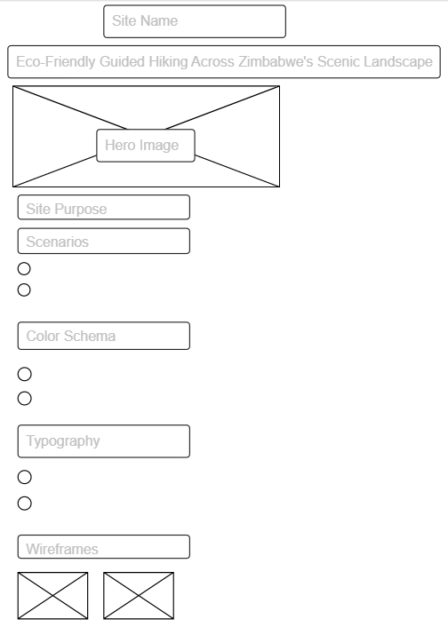
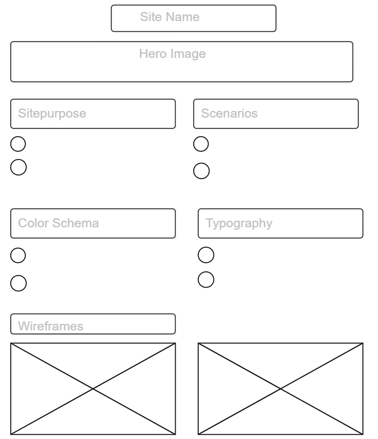

Site Name
SolarTrail Adventures
This name evokes the harmony between solar-powered energy and trail exploration. It's designed to inspire curiosity and promote sustainable hiking and travel experiences throughout Zimbabwe's most scenic landscapes. The name is memorable, brandable, and rooted in the natural essence of the site’s mission.
Site Purpose
This website serves as a central hub for nature lovers and adventure seekers in Zimbabwe. It offers guided eco-hikes, information about local trails, sustainable travel tips, and an easy-to-use tour booking system.
Scenarios
- Where can I book a tour and view availability?
- What should I pack for a multi-day hike in Nyanga National Park?
Color Schema
- Earthy Green (#4E944F): Used for headings and call-to-action buttons
- Warm Sand (#F6E7C1): Used for the background and content containers
Typography
- Montserrat: Headings and navigation elements
- Open Sans: Main body text for readability
Wireframes
Mobile View
Desktop View
These wireframes show a clean layout with a header, tour preview, featured trails, testimonials, and a footer. Visual hierarchy is maintained using colors and spacing.